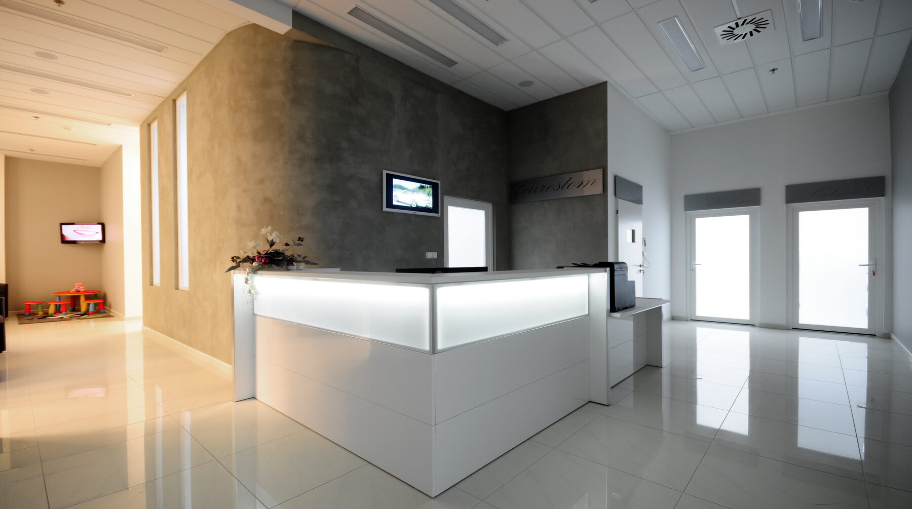

Příběh kliniky
Stomatologická klinika v centru Brna, poblíž Galerie Vaňkovka.
EUROSTOM je moderně vybavené stomatologické pracoviště s kvalitními dentálními přístroji v centru Brna, v blízkosti Galerie Vaňkovka.
Vede nás MUDr. Aleš Štěpánek, atestovaný stomatochirurg s dvacetiletou soukromou praxí. Pracujeme s implantáty Alpha-Bio, Neodent a Straumann, spolupracujeme s laboratoří JS LAB.
